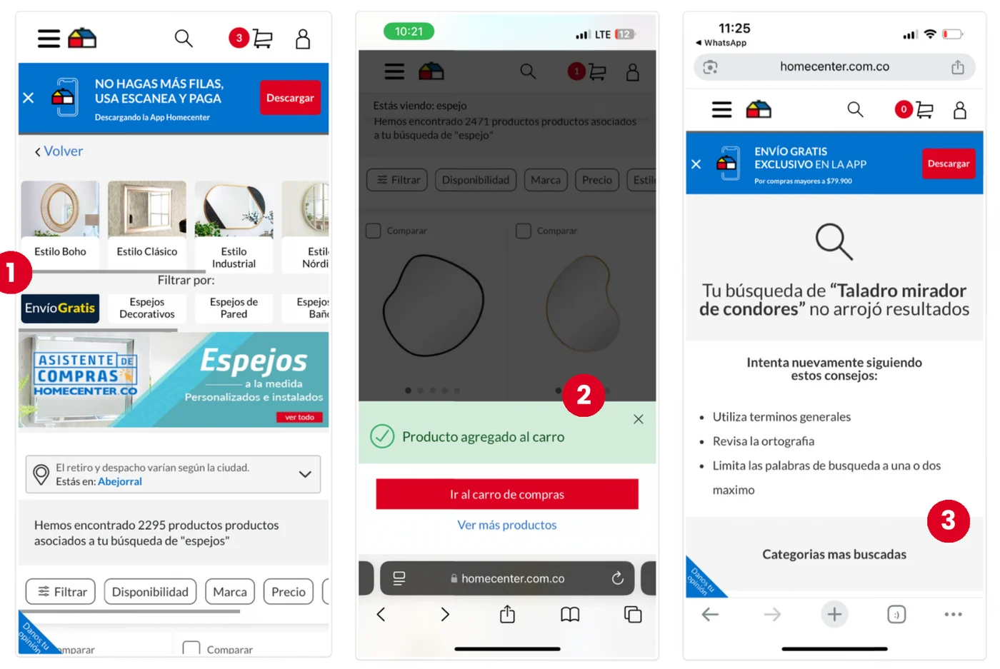
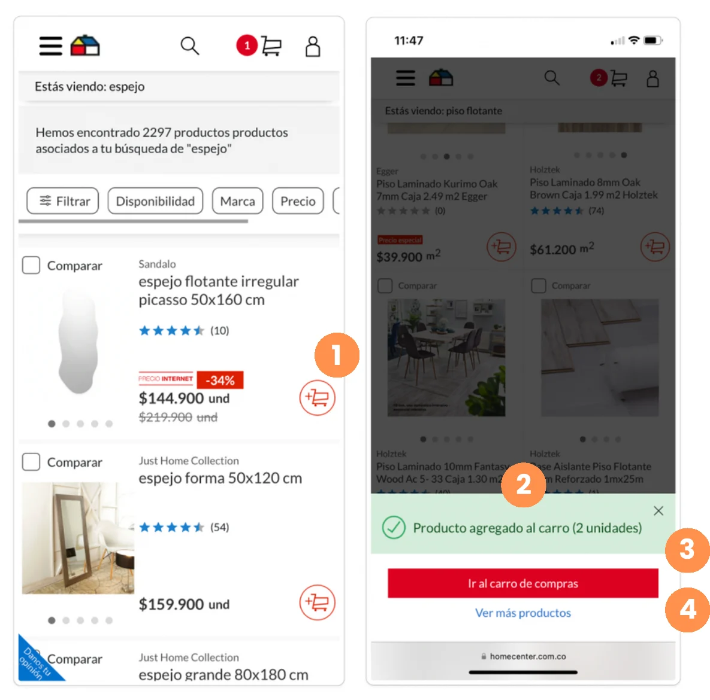
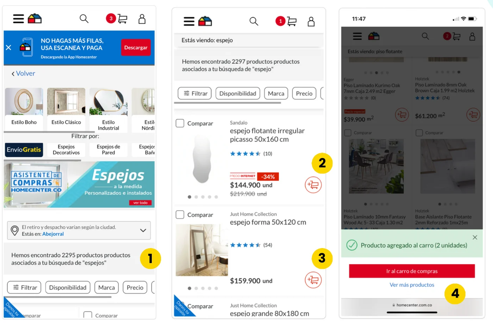
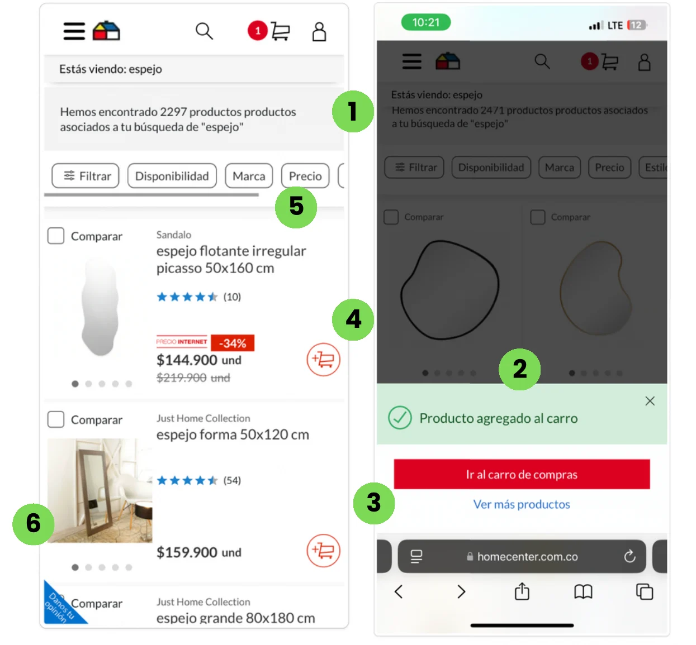
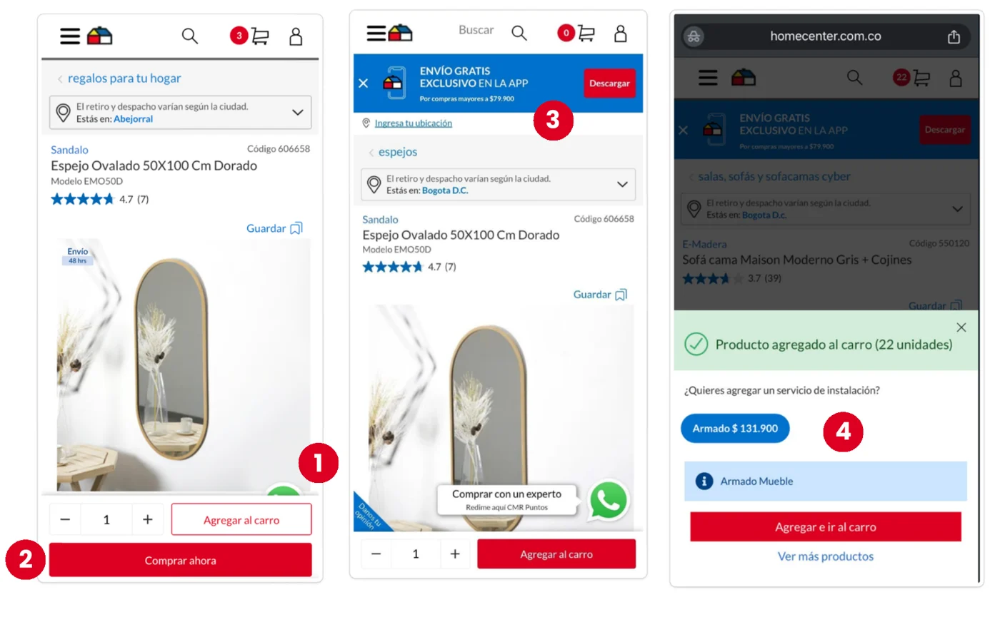
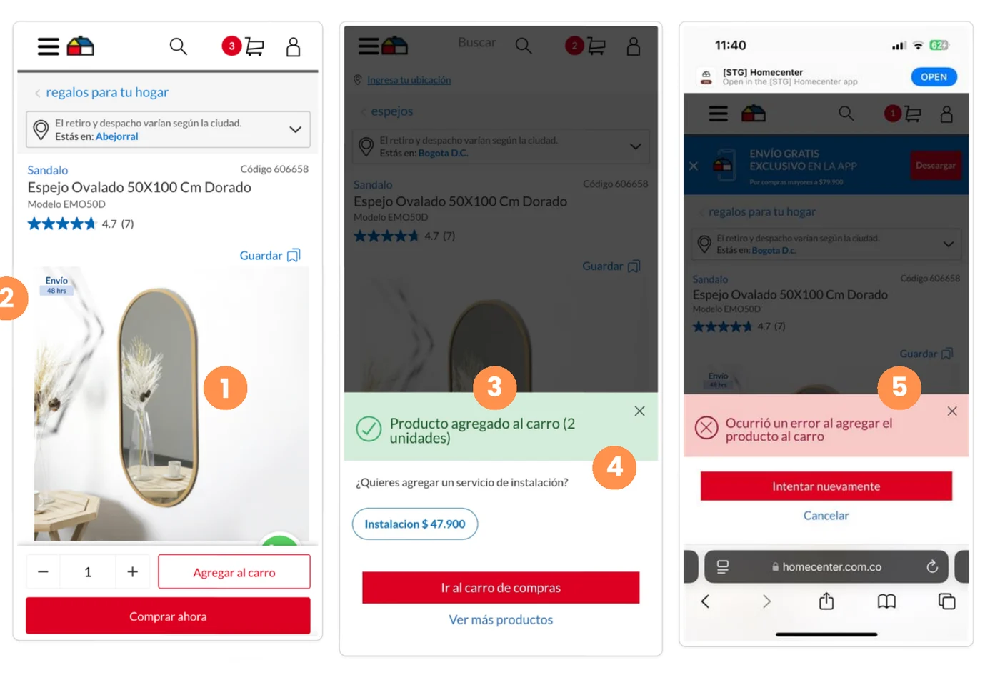
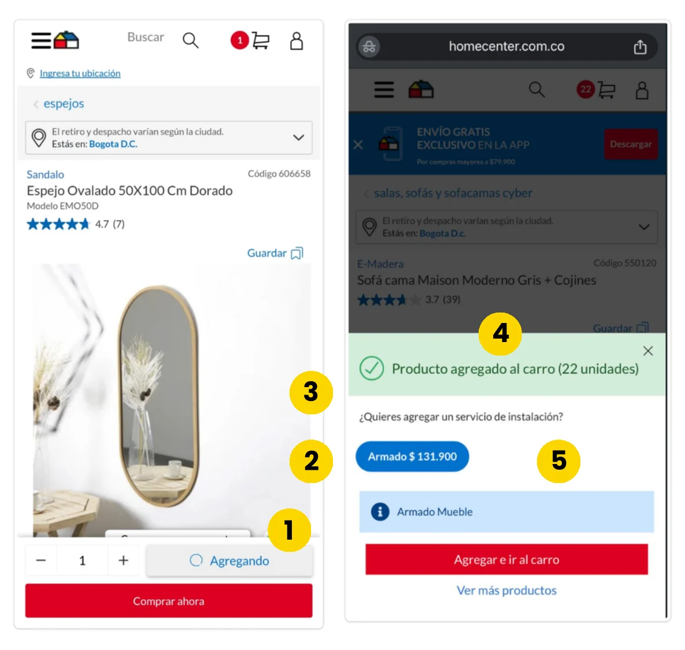
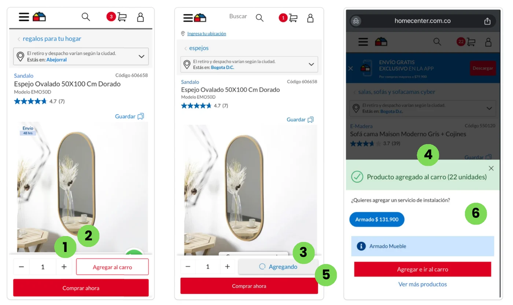

Una brecha de conversión en web mobile, evaluada con expertos de UX de Colombia y Chile y convertida en un plan de mejoras priorizado por el equipo de producto.
Conversión de ≈0.66% frente a ≈1.00% de Chile; en agregar al carro, ≈6% frente a 13%.
Una evaluación con expertos, con un criterio común y control de sesgos.
37 hallazgos: 7 críticos, 9 a optimizar, 9 con mejoras y 12 a mantener.
Acciones priorizadas por producto, que llevaron a cambios en la interfaz.
La conversión de Colombia es baja frente a otros países, y la mayor oportunidad está en el evento de agregar al carro y en el canal web mobile.
En 2025, web mobile logra entre 30% y 61% de la tasa de desktop.
Mobile bajó de 4.06% a 2.97% mientras desktop subió de 7.84% a 10.04%.
En PDP, 0.05% en mobile frente a 0.54% en desktop (2025).
SLP: resultados de búsqueda · PLP: lista de productos · PDP: página de producto. Datos de homecenter.co.
Una evaluación heurística sirve si todos miran con la misma vara. Definí el marco, el alcance y los controles antes de la primera sesión.
Los 10 heurísticos de Nielsen como base, más un criterio adicional: calidad y estructura del contenido. Cada evaluador revisó dos criterios por página.
Dos sesiones de 3 horas, con trabajo colaborativo en Figjam.
Identifiqué los sesgos que podían distorsionar los resultados antes de iniciar las sesiones.
Las respuestas cambian según si la información se presenta de forma positiva o negativa.
Creer que algo es más común de lo que es solo porque se le empezó a prestar atención.
Responder de la manera que se cree favorable, lo que exagera los comentarios positivos.
Revisamos cómo resuelven agregar al carro tres referentes, para tener un punto de comparación.
Botón “Agregar al carrito” visible en cada producto de la PLP, accesible en la búsqueda y destacado en la PDP, con reseñas y varias imágenes.
Presentación clara en la PLP con el botón visible, resultados precisos con filtros y ordenamiento, y en la PDP información técnica y disponibilidad en tienda.
No muestra el botón en la PLP ni en la búsqueda, pero ofrece herramientas para ver el producto en el espacio real en la PDP.
Cada hallazgo se calificó en la escala y se ancló a una captura. Empieza por lo crítico y abre cada nivel para ver el detalle.








Producto priorizó las mejoras según el impacto de cada hallazgo en la experiencia. Así se conectan los hallazgos con las acciones.
Ese es el centro del Diseño Estratégico: pasar de una brecha en los datos a un plan que el negocio puede ejecutar.
El problema se definió con la tasa de agregar al carro por página y canal, antes de evaluar nada.
Un marco común de 11 criterios repartidos entre los evaluadores, con los sesgos identificados desde el inicio.
Cada hallazgo se tradujo en acciones que el equipo de producto priorizó según su impacto.